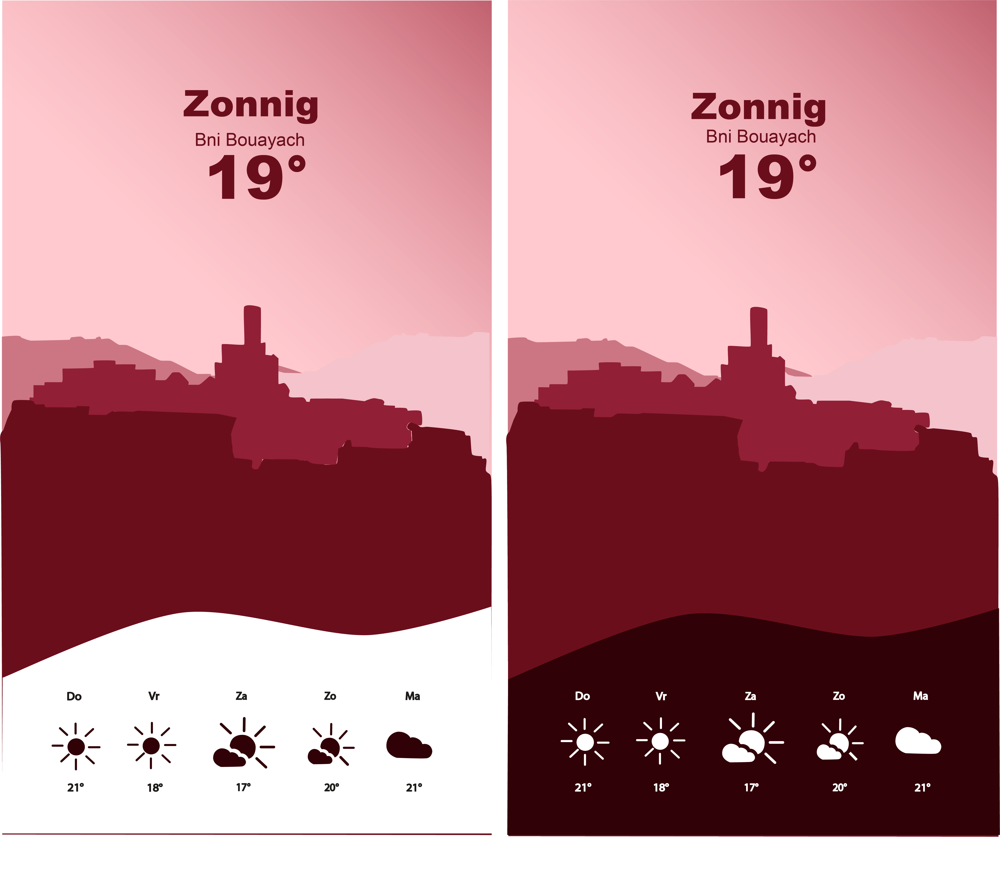
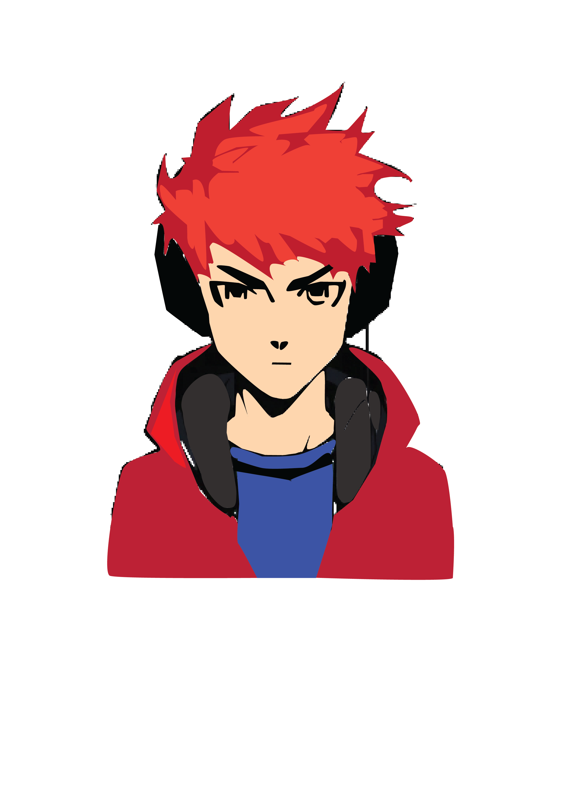
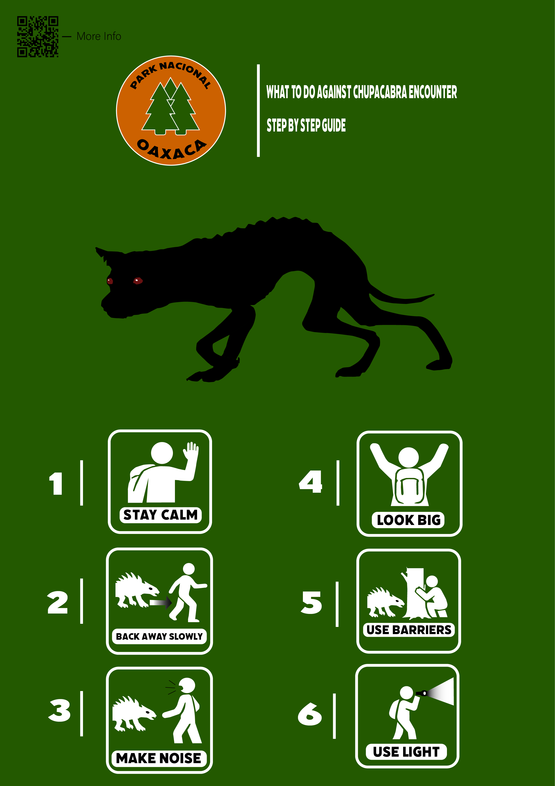

Webontwikkeling
Zie Onze AanbodBeeldverwerking
Zie Onze AanbodVectorieel Tekenen
Zie Onze AanbodTypografische Vormgeving
Zie Onze AanbodVectorieel Tekenen
Tijdens vectorieel tekenen ontdek je hoe je strakke en schaalbare illustraties maakt met Adobe Illustrator. Je leert werken met vormen, lijnen en paden om eigen ontwerpen te creëren, zoals logo’s, illustraties en zelfs mandala’s. Stap voor stap bouw je je vaardigheden op en leer je hoe je van een eenvoudig idee een professioneel ontwerp maakt. Verwacht een combinatie van precisie, creativiteit en af en toe even zoeken waarom je lijn ineens verdwenen is (spoiler: hij staat waarschijnlijk gewoon op 0% opacity)


